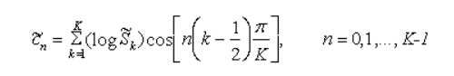

Mel-frequency cepstrum coefficients processor
Speaker recognition is the process of automatically recognizing who is speaking on the basis of individual information included in speech waves. This technique makes it possible to use the speaker's voice to verify their identity and control access to services such as voice dialing, banking by telephone, telephone shopping, database access services, information services, voice mail, security control for confidential information areas, and remote access to computers. Speech input is typically recorded at a sampling rate of above 10,000 Hz. This sampling frequency was chosen to minimize the effects of aliasing during analog-to-digital conversion. These sampled signals can capture all frequencies up to 5 kHz, which cover most energy of sounds that are generated by humans.
The main purpose of the MFCC processor is to mimic the behavior of the human ears. MFCC’s are based on the known variation of the human ear’s critical bandwidths with frequency, filters spaced linearly at low frequencies and logarithmically at high frequencies have been used to capture the phonetically important characteristics of speech. In addition, rather than the speech waveforms themselves, MFFC’s are shown to be less susceptible to the mentioned variations. The 5 techniques depicted will be shown in more detail in their respective sections.

Frame Blocking
The input signal, which is our recorded voices, is blocked into frames of N samples with N having a typical value of 256 samples. The Frames are then separated by a Frame Number, M with the typical value of M being 100 Frames
Windowing
In this step each individual frame is windowed This process assists in eliminating spectral distortion and noise. The idea here is to set the beginning and end of each frame to 0 so that the discontinuities can be eliminated. We define the window as w(n), in the specified interval shown, where N is the number of samples in each frame, then the result of windowing is the signal A typical windowing process is the Hamming window:

Fast Fourier Transform (FFT)
The Fast Fourier Transform converts each frame of N samples from the time domain to the Frequency Domain. The FFT is a fast algorithm to implement the Discrete Fourier Transform (DFT), which is defined on the set of N samples x sub n, as shown in the equation below. Here, k = 0,1,2,...,N-1. In general, X sub k are complex numbers and we only consider their absolute values (frequency magnitudes).

Mel-frequency Wrapping
One way to simulate the subjective spectrum is to use a filter bank, spaced uniformly on the mel-scale. That filter bank has a triangular bandpass frequency response, and the spacing as well as the bandwidth is determined by a constant mel frequency interval. The number of mel spectrum coefficients, K, is typically chosen as 20.

Cepstrum
In this final step, we convert the log mel spectrum back to time. The result is called the mel frequency cepstrum coefficients (MFCC). The cepstral representation of the speech spectrum provides a good representation of the local spectral properties of the signal for the given frame analysis. These set of coefficients are also called acoustic vectors. The problem of speaker recognition comes back to pattern recognition. The goal of pattern recognition is to classify objects of interest into one of a number of categories or classes. The objects of interest are generically called patterns and in our case are sequences of acoustic vectors that are extracted from an input speech using the 5 techniques that we described. Because the mel spectrum coefficients are real numbers, we can convert them to the time domain using the Discrete Cosine Transform (DCT):
